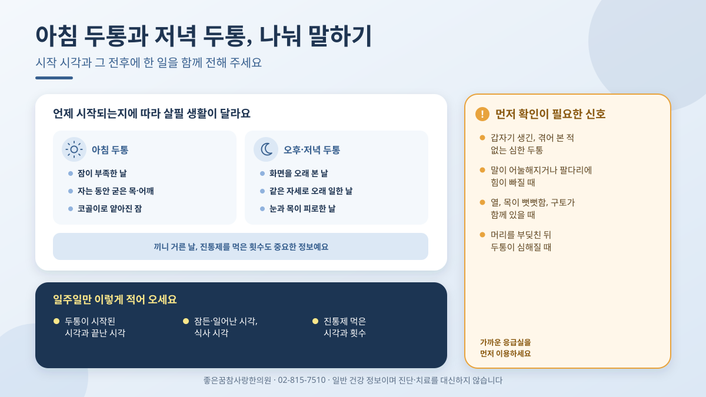
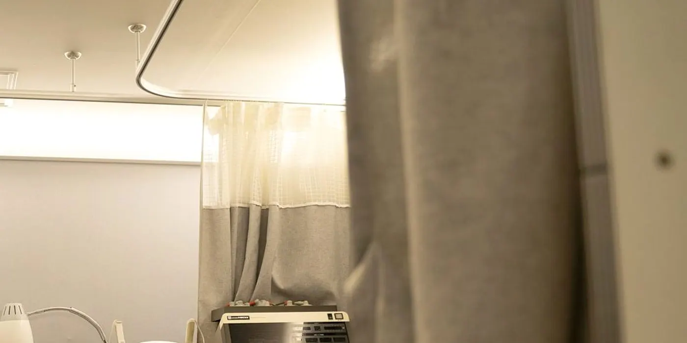

두통이 하루 중 언제 시작되는지는 잠, 식사, 눈의 피로, 자세와 이어진 경우가 많아, 시작 시각과 그 전후에 한 일을 나눠 말씀해 주시면 함께 살필 생활이 분명해집니다.
여쭙는 것
- 두통은 주로 몇 시쯤 시작되나요? 눈뜰 때부터인가요, 오후부터인가요?
- 시작되기 전에 잠, 식사, 화면 보기, 오래 앉아 있기 중 무엇이 있었나요?
- 머리의 어느 쪽이 아프고, 조이는 느낌인지 욱신거리는 느낌인지요?
생활에서 해 볼 것
- 잠드는 시각과 일어나는 시각을 일주일만 일정하게 맞춰 보기
- 화면 작업은 한 시간에 한 번 먼 곳을 보며 목과 어깨 풀기
- 끼니를 거르지 않고 물을 자주 나눠 마시기
한의원에서 함께 살필 것
- 아침마다 목과 어깨가 굳은 채로 두통이 시작되는 경우 잠자리 자세와 목·어깨 긴장을…
- 오후가 되면 눈이 뻑뻑해지며 머리가 무거워지는 경우 하루의 작업 자세와 휴식 리듬을…
- 식사를 거른 날 두통이 잦은 경우 식사 시각과 소화 상태를 함께 살핍니다.
먼저 확인이 필요한 신호
- 갑자기 생긴, 지금까지 겪어 본 적 없는 심한 두통
- 두통과 함께 말이 어눌해지거나 팔다리에 힘이 빠지는 경우
- 열, 목이 뻣뻣함, 구토가 함께 있는 경우

"머리가 아파요"라는 말만으로는 어떤 두통인지 알기 어렵습니다. 눈뜨자마자 아픈 두통과 오후 늦게 시작되는 두통은 함께 살펴볼 생활이 달라서, 시작 시각과 그 전후에 한 일을 나눠 말씀해 주시는 것이 좋은 출발점입니다.
왜 이런 불편이 생길 수 있나요
- 아침 두통은 잠이 부족하거나 자는 동안 목·어깨가 굳은 경우, 코골이로 잠이 얕은 경우와 이어지기도 합니다.
- 오후·저녁 두통은 화면을 오래 보거나 같은 자세로 일해 눈과 목이 피로한 경우가 많습니다.
- 끼니를 거르거나 물을 적게 마신 날 머리가 아프다는 분도 있습니다.
- 진통제를 자주 먹으면 두통이 오히려 잦아지는 경우가 있어 먹은 횟수도 중요한 정보입니다.

먼저 이렇게 여쭙니다
- 두통은 주로 몇 시쯤 시작되나요? 눈뜰 때부터인가요, 오후부터인가요?
- 시작되기 전에 잠, 식사, 화면 보기, 오래 앉아 있기 중 무엇이 있었나요?
- 머리의 어느 쪽이 아프고, 조이는 느낌인지 욱신거리는 느낌인지요?
- 쉬거나 잠을 자고 나면 어떻게 달라지나요?
- 진통제는 일주일에 며칠 정도 드시나요?
일상에서 먼저 해 볼 수 있는 것
- 잠드는 시각과 일어나는 시각을 일주일만 일정하게 맞춰 보기
- 화면 작업은 한 시간에 한 번 먼 곳을 보며 목과 어깨 풀기
- 끼니를 거르지 않고 물을 자주 나눠 마시기
- 아침 두통이 잦다면 베개 높이와 방 온도 점검하기
- 진통제는 정해진 용법 안에서만 먹기
한의원에서 함께 살필 수 있는 경우
- 아침마다 목과 어깨가 굳은 채로 두통이 시작되는 경우 잠자리 자세와 목·어깨 긴장을 함께 살핍니다.
- 오후가 되면 눈이 뻑뻑해지며 머리가 무거워지는 경우 하루의 작업 자세와 휴식 리듬을 함께 살핍니다.
- 식사를 거른 날 두통이 잦은 경우 식사 시각과 소화 상태를 함께 살핍니다.
좋은꿈참사랑한의원에서는 두통의 시각과 생활을 먼저 충분히 듣고, 진맥을 기본으로 하고 필요하다고 판단될 때 설진과 함께 목·어깨의 움직임을 살핀 뒤, 상태에 맞춰 침·약침·추나·한약 상담 등을 정합니다. 귀가 전에는 다음 진료까지 적어 올 항목을 알려 드립니다.
이렇게 기록해 오시면 상담이 쉬워집니다
- 일주일 동안 두통이 시작된 시각과 끝난 시각
- 그날 잠든 시각, 일어난 시각, 식사 시각
- 아침 두통이면 베개 높이와 방 온도, 저녁 두통이면 오후의 화면 사용 시간
- 진통제를 먹은 시각과 횟수

이런 증상은 먼저 확인이 필요합니다
- 갑자기 생긴, 지금까지 겪어 본 적 없는 심한 두통
- 두통과 함께 말이 어눌해지거나 팔다리에 힘이 빠지는 경우
- 열, 목이 뻣뻣함, 구토가 함께 있는 경우
- 머리를 부딪친 뒤 두통이 심해지는 경우
이런 경우에는 119나 응급실을 먼저 이용하세요. 복용 중인 약은 처방한 의사와 상의 없이 줄이거나 끊지 않습니다.
한눈에 보는 표
| 구분 | 핵심 |
|---|---|
| 여쭙는 것 | 두통은 주로 몇 시쯤 시작되나요? 눈뜰 때부터인가요, 오후부터인가요? 시작되기 전에 잠, 식사, 화면 보기, 오래 앉아 있기 중 무엇이 있었나요? |
| 생활에서 해 볼 것 | 잠드는 시각과 일어나는 시각을 일주일만 일정하게 맞춰 보기 화면 작업은 한 시간에 한 번 먼 곳을 보며 목과 어깨 풀기 |
| 한의원에서 함께 살필 것 | 아침마다 목과 어깨가 굳은 채로 두통이 시작되는 경우 잠자리 자세와 목·어깨 긴장을 함께 살핍니다. 오후가 되면 눈이 뻑뻑해지며 머리가 무거워지는 경우 하루의 작업 자세와 휴식 리듬을 함께 살핍니다. |
| 먼저 확인이 필요한 신호 | 갑자기 생긴, 지금까지 겪어 본 적 없는 심한 두통 두통과 함께 말이 어눌해지거나 팔다리에 힘이 빠지는 경우 |
자주 묻는 질문
진통제를 먹은 날도 기록해야 하나요?
네. 진통제를 먹은 날과 횟수는 두통의 흐름을 이해하는 데 중요한 정보라서 함께 적어 오시면 도움이 됩니다.
기록은 얼마 동안 하면 되나요?
일주일만 적어도 시각과 생활의 관계가 보이기 시작하는 경우가 많습니다. 부담 없이 짧게 적어 오셔도 됩니다.
아침 두통이 있는데 코골이도 심하다고 합니다.
자다가 숨이 멎는 듯하다는 말까지 들었다면 수면 검사가 가능한 의료기관 확인을 먼저 권합니다. 그 결과와 함께 생활을 살펴봅니다.
이 글은 일반적인 건강 정보이며 개인의 진단이나 치료를 대신하지 않습니다. 증상이 있거나 복용 중인 약이 있다면 진료를 통해 확인하세요. 치료 효과는 개인마다 다를 수 있습니다.
작성 기준: 일반적으로 알려져 있는 건강 정보를 참고해 정리했습니다(대표원장 감수). 증상 기록은 1~2주 동안 하루 1회, 비슷한 시간에 적어 오시면 지난 상태와 비교하기 쉽습니다.
좋은꿈참사랑한의원은 재진 때 지난번 이야기부터 이어서 여쭙니다. 진료시간과 예약은 오시는 길에서 확인하세요.